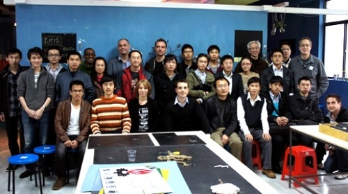

也紀念我們永遠的朋友 李士傑先生（Shih-Chieh Ilya Li）。
中國開源發展緩慢的理由
◎本文原載 Linux Pilot，原文章連結按此。
開源技術在中國的發展比其他地區來得慢，有外國開發者認為，是因為在某些領域，中國文化並不鼓勵個性，嚴重的阻礙了創新，這正正是黑客與開源文化的最基本元素。

這位外國朋友名叫 Ronan Berder，他的見解絕對有份量，因為他正是開源組織 Wiredcraft 的創始人，因為工作的關係，經常來往舊金山和上海。Wiredcraft 是一個以開源技術為客戶開發 Web 應用程式和手機程式的組織，客戶包括美國 Fortune 500 大企業、非牟利組織和政府部門，客戶遍佈歐美和亞洲，而且持續地在中國招攬開發人員。
最近他發表一篇文章，指出由於中國教育落後，不鼓勵個性化，人員分散，導致中國開源遲遲不能成型。十年前在西方世界，開源同樣不是很流行，老闆們不會關心你是否熟悉 Linux，或是你對開源軟體項目組做過哪些貢獻。他們只需要你擁有 Java 相關的工作經驗，實際上，SourceForge 曾經就是一個託管開源軟體項目的平台，如果不是因為它的改變，GitHub 也不會在最近幾年成為另一個託管平台，但如今在美國和歐洲呈現了另一番景象。
他指出由於存在大量的高品質、免費及對用戶友好的資源和工具，英語開發者的入行門檻降低了很多。聲譽激勵機制在行業內不斷得到增強，公司要求開發者提供其 GitHub 頁面地址和對開源貢獻的資訊。即使再小眾話題的項目，拋到社交網站 Meetup 上，也能招引一批專業人士前來解答，低在中國這種情景很難見到。
「中國直到 1978 年才正式對外開放，中國的互聯網人口數量正逐漸成為全球之最，但規模不等同於文化。中國教育上嚴重偏向 CS 程式 (Java、.NET)，人們通常只考慮使用 CS，因為其他程式「過於複雜」，情況就和 1990 年代的歐洲一樣。不幸的是，教育系統的發展速度，遠遠落後於技術發展和消費行為。有很多年輕人在生活和工作中，只是想成為與其他人一樣的人，這嚴重的阻礙了創新和實踐，而這正是黑客與 OSS 文化的最基本元素。」他說。「年輕人會從多方面接觸到英語，但仍與受過正式教育的人差距甚遠。」
但這並不是代表中國並不提倡開源。在一線城市如北京、上海和廣州，還是能找到一些活躍的本地社區，像北京和上海的 Python 社區便是，只是規模太小，而且非常的孤立並具有區域性。這種阻礙協作和知識傳遞的行為，將減緩其他社區的發展。在上海這些社區的發動者和領導人，多數都是外國人，讓本地人出席活動和分享經驗是一件非常困難的事。
但近年來狀況開始改變，積極使用開源技術的淘寶，受到科技行業高度重視，以往在中國「免費」的 Windwos 現在要正版化了，令更多人開始轉用 Linux 。 Android 是中國移動市場的霸主，深圳製造商需要生產更多既便宜又快的硬體產品，令整個山寨產業已經順其自然的成為「開源」。這方面中國的「開源」非常先進，他們是複製、分拆、合併和升級產品的專家。未來這方面的需要，說不定會帶動中國的開源技術走出一條新路。
Special


Address：No.128, Sec.2, Academia Rd., Institute of Information Science, Academia Sinica, Nangang District, Taipei City 11529, Taiwan (R.O.C).
Privacy Policy. Terms-of-use

Comments